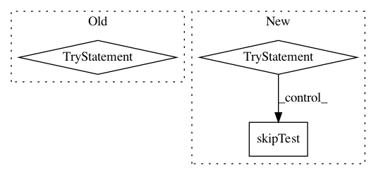

854bd820b43a0c3f981fae588d1a0323a6e3486d,test/chemistry/test_driver_fcidump_dumper.py,TestDriverFCIDumpDumpH2,setUp,#TestDriverFCIDumpDumpH2#,102
Before Change
self.orb_symmetries = [1, 1]
self.mo_onee = [[1.2563, 0.0], [0.0, 0.4719]]
self.mo_eri = [0.6757, 0.0, 0.1809, 0.6646, 0.0, 0.6986]
try:
driver = PySCFDriver(atom="H .0 .0 .0; H .0 .0 0.735",
unit=UnitsType.ANGSTROM,
charge=0,
spin=0,
basis="sto3g")
except QiskitChemistryError:
self.skipTest("PYSCF driver does not appear to be installed")
qmolecule = driver.run()
dump = tempfile.NamedTemporaryFile()
FCIDumpDriver.dump(qmolecule, dump.name)
After Change
self.orb_symmetries = [1, 1]
self.mo_onee = [[1.2563, 0.0], [0.0, 0.4719]]
self.mo_eri = [0.6757, 0.0, 0.1809, 0.6646, 0.0, 0.6986]
try:
driver = PySCFDriver(atom="H .0 .0 .0; H .0 .0 0.735",
unit=UnitsType.ANGSTROM,
charge=0,
spin=0,
basis="sto3g")
qmolecule = driver.run()
dump = tempfile.NamedTemporaryFile()
FCIDumpDriver.dump(qmolecule, dump.name)
// pylint: disable=import-outside-toplevel
from pyscf.tools import fcidump as pyscf_fcidump
self.dumped = pyscf_fcidump.read(dump.name)
dump.close()
except QiskitChemistryError:
self.skipTest("PYSCF driver does not appear to be installed.")
except ImportError:
self.skipTest("PYSCF driver does not appear to be installed.")
if __name__ == "__main__":
unittest.main()
In pattern: SUPERPATTERN
Frequency: 3
Non-data size: 3
Instances
Project Name: Qiskit/qiskit-aqua
Commit Name: 854bd820b43a0c3f981fae588d1a0323a6e3486d
Time: 2020-07-24
Author: mtreinish@kortar.org
File Name: test/chemistry/test_driver_fcidump_dumper.py
Class Name: TestDriverFCIDumpDumpH2
Method Name: setUp
Project Name: Qiskit/qiskit-aqua
Commit Name: 78bcfaa51aa59074492f011a4ff99e93a2b39c2f
Time: 2020-06-24
Author: manoel@us.ibm.com
File Name: test/finance/test_data_providers.py
Class Name: TestDataProviders
Method Name: test_nasdaq
Project Name: Qiskit/qiskit-aqua
Commit Name: 78bcfaa51aa59074492f011a4ff99e93a2b39c2f
Time: 2020-06-24
Author: manoel@us.ibm.com
File Name: test/finance/test_data_providers.py
Class Name: TestDataProviders
Method Name: test_exchangedata